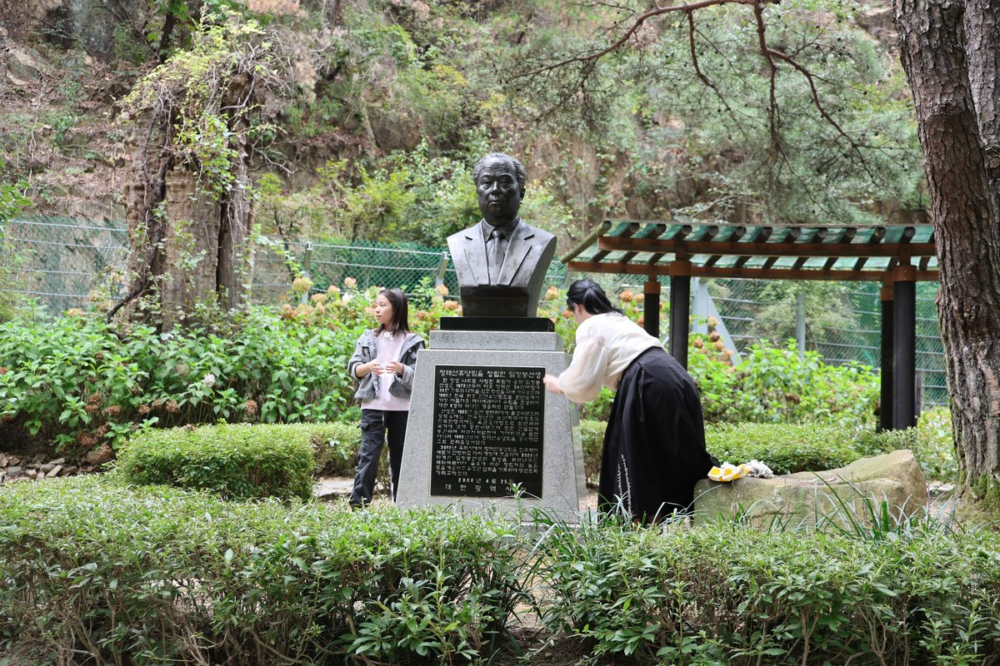

아버지의 숲
대전 장태산
아버지 임창봉 선생은 1970년, 쉰 살에 이 일을 시작하셨습니다. 삼십 년 동안 돌을 쌓고 길을 내고 나무를 심으셨습니다. 어디에 무슨 나무를 둘지 미리 정해 두고, 수채화를 그리듯 한 그루씩 자리를 잡아 주셨습니다.
2002년에 돌아가신 뒤로 저는 오랫동안 이 숲에 오지 못했습니다. 다시 걸어 들어오기까지 이십 년이 걸렸습니다.
이날은 딸과 손녀가 함께 왔습니다. 손녀에게는 한 번도 뵌 적 없는 분입니다. 비문 앞에 서서 글자를 읽는 아이를 보며, 한 사람의 꿈이 여러 사람의 것이 되었다는 생각을 했습니다.